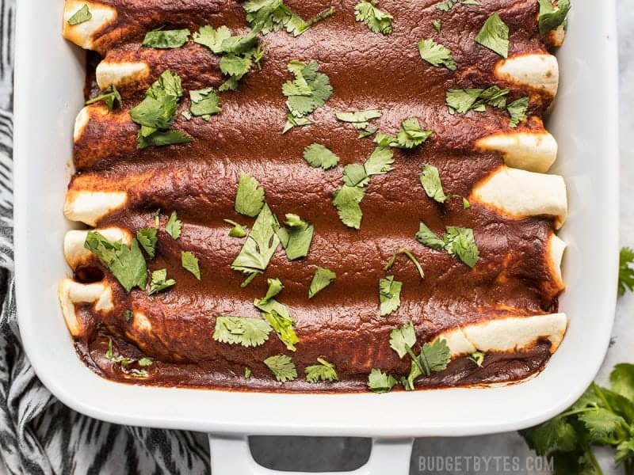

Avocado and Blackbean Enchilada

A delicious, healthy and veggie friendly comfort food!
Ingredients:
- 1 avocado
- 2 tins black beans
- 1 bell pepper
- Handful of sweetcorn
- 500ml tomato passata
- Enchilada spices
- White cheddar cheese
- 8 tortilla wraps
- Coriander
- Salt
Method:
- Mix avocado, black beans, peppers, sweetcorn with a teaspoon of coriander and salt and set aside
- Heat passata with Enchilada spices about 10 minutes until nicely heated
- Divide avocado mixture into 8 tortilla wraps and place in oven dish
- Pour over passata and grated cheddar
- Cook in oven about 20 minutes until golden brown
- Enjoy!